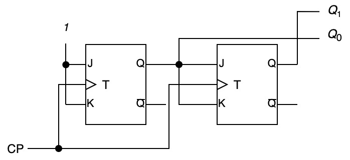

#20200527a
| $_B\backslash ^A$ | $0$ | $1$ |
|---|---|---|
| $0$ | $0$ | $0$ |
| $1$ | $0$ | $1$ |
| $_B\backslash ^A$ | $0$ | $1$ |
|---|---|---|
| $0$ | $0$ | $1$ |
| $1$ | $1$ | $1$ |
| $A$ | $\overline{A}$ | |
|---|---|---|
| $0$ | $1$ | |
| $1$ | $0$ |
https://yutomi7a.github.io/simcirjs/rsff.html
※上のRS-FFは負論理で実装されているため, NOTゲートを挟んで入力を反転させます.
入力されるCPの数を一定まで数える順序回路
典型的なのは $n$ビット$2$進カウンタ
一般的なカウンタの(JK-FFを用いた)設計
| $J$ | $K$ | $T$ | $Q^{t+1}$ |
|---|---|---|---|
| 0 | 0 | $\rceil\hspace{-.39in}\downarrow\hspace{-.39in}\lfloor$ | $Q^t$ |
| 0 | 1 | $\rceil\hspace{-.39in}\downarrow\hspace{-.39in}\lfloor$ | 0 |
| 1 | 0 | $\rceil\hspace{-.39in}\downarrow\hspace{-.39in}\lfloor$ | 1 |
| 1 | 1 | $\rceil\hspace{-.39in}\downarrow\hspace{-.39in}\lfloor$ | $\overline{Q^{t}}$ |
| $Q^t\to Q^{t+1}$ | $J$の条件 | $K$の条件 | 状態動作 |
|---|---|---|---|
| $0\to 0$ | $0$ | - | 保持/リセット |
| $0\to 1$ | $1$ | - | 反転/セット |
| $1\to 0$ | - | $1$ | 反転/リセット |
| $1\to 1$ | - | $0$ | 保持/セット |
| $Q_1^{t}$ | $Q_{0}^{t}$ | $Q_1^{t+1}$ | $Q_{0}^{t+1}$ | $J_1$ | $K_1$ | $J_0$ | $K_0$ |
|---|---|---|---|---|---|---|---|
| 0 | 0 | 0 | 1 | 0 | - | 1 | - |
| 0 | 1 | 1 | 0 | 1 | - | - | 1 |
| 1 | 0 | 1 | 1 | - | 0 | 1 | - |
| 1 | 1 | 0 | 0 | - | 1 | - | 1 |
ここから各JK-FFの$J$, $K$それぞれの条件式を求める
ドントケア(-)は含めても含めなくとも良い
| $_{Q^{t}_1}\backslash ^{Q^{t}_0}$ | 0 | 1 |
| 0 | 0 | 1 |
| 1 | - | - |
$J_1 = Q^{t}_0$
なるべく大きなグループで囲む
| $_{Q^{t}_1}\backslash ^{Q^{t}_0}$ | 0 | 1 |
| 0 | 1 | - |
| 1 | 1 | - |
$J_0 = 1$
ドントケア(-)は含めても含めなくとも良い
| $_{Q^{t}_1}\backslash ^{Q^{t}_0}$ | 0 | 1 |
| 0 | - | - |
| 1 | 0 | 1 |
$K_1 = Q^{t}_0$
なるべく大きなグループで囲む
| $_{Q^{t}_1}\backslash ^{Q^{t}_0}$ | 0 | 1 |
| 0 | 1 | - |
| 1 | 1 | - |
$K_0 = 1$
$J=K=1$とし, $Q_0$の出力を次の$J$と$K$に入力 